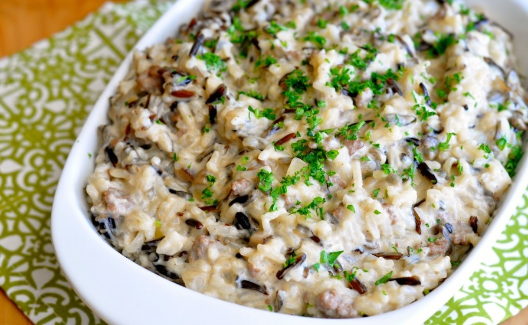
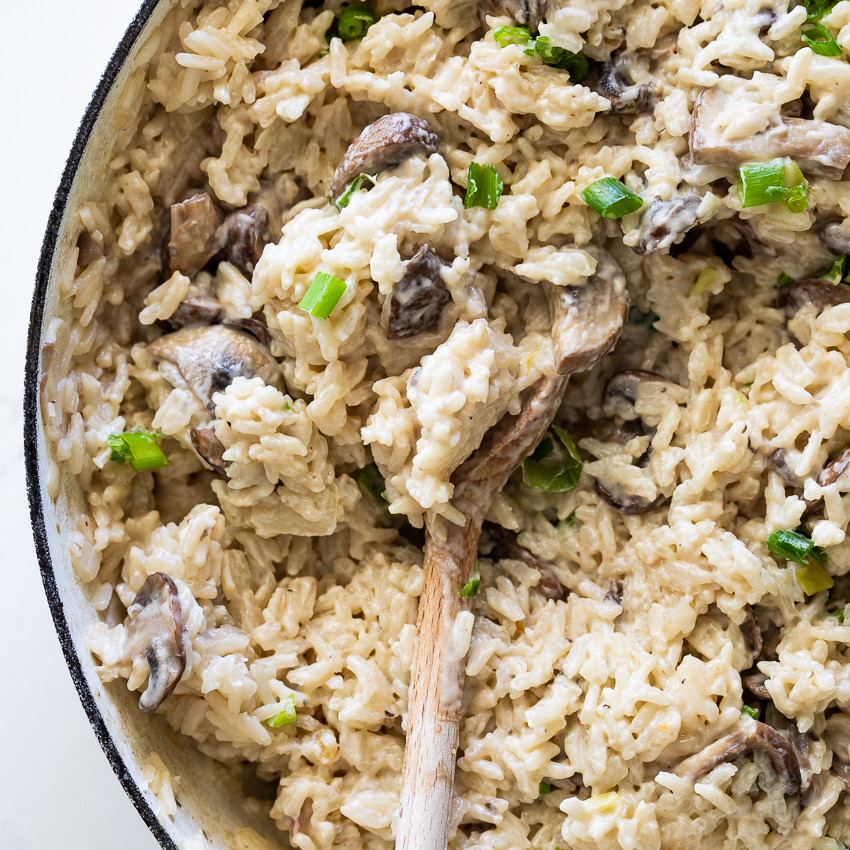

Hamburger Rice Hotdish
Cooked to perfection from grandma's recipe book, Revised by
Mackenzie Jackson

Ingredients Needed
4 cups
of water
4 cups
of rice
2 cans
of cream of mushroom
2 cans
of cream of chicken
1 can
of cream of celery
2 tablespoons
of Worcestershire sauce
Salt and pepper as needed
Directions
Start by cooking the hamburger
In a separate pot add rest of ingredients
2 pounds of hamburger
4 cups of minute rice
4 cups of water
2 cans cream of mushroom
2 cans cream of chicken
1 can cream of celery
2 tablespoons Worcestershire sauce
Salt and pepper to taste
Cook all together on medium while lid, stirring occasionally
Meal will thicken up, add more salt and pepper if needed
Personal food addition: soy sauce on top before eating adds a good flavor
